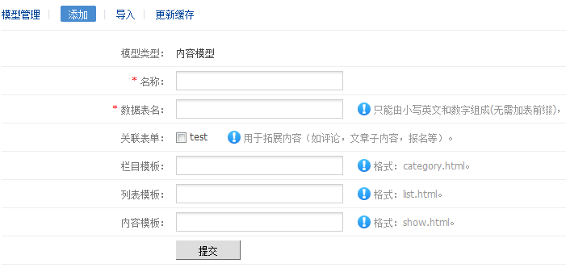
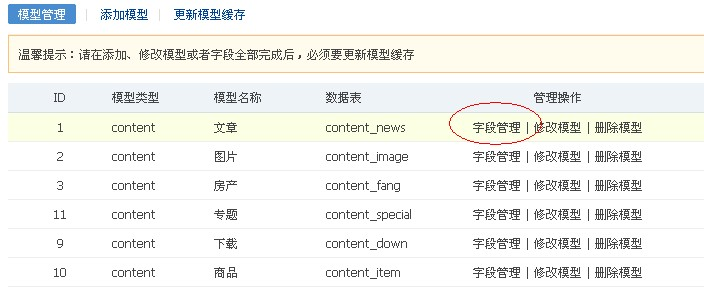
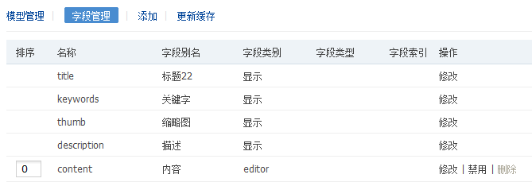
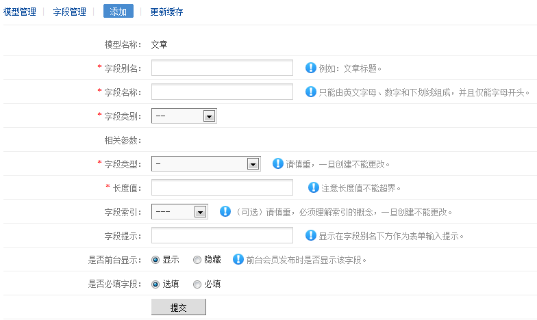

模型是FineCMS的核心，下面来介绍如何创建内容模型（会员模型、表单模型与内容模型一致）
一、添加一个模型
后台进入“内容模型”，执行“添加”

模型名称：是你为这个模型取一个名字，比如”文章“，”产品“，”报表“
数据表名：不能重复，小写英文即可，比如”news“，”pro“
栏目模板、列表模板、内容模板可以自定义，如果不填系统会自动给你取一个名字，必须是".html"文件
关于”关联表单“在表单章节有介绍
二、字段管理，添加字段
1、进入“模型列表”，执行“字段管理”，见下图

2、可以看到默认的系统字段，你可以对默认的系统字段进行修改，见下图

3、执行菜单上的“添加”，来为当前模型添加字段，见下图

字段别名：当然这个别名指的是字段的标题，比如：文章标题，电话号码等
字段名称：只能由英文字母、数字和下划线组成，并且仅能字母开头，不以下划线结尾
字段类别：根据实际情况来选择（实在不懂的可以参考”字段类别说明“这一节）
字段类型：根据你的情况来设定字段类别，就行mysql建表字段一样
字段长度：由上面的“字段类型”来决定长度，不能超过了该字段类型的最大长度，不了解可以翻翻Mysql手册
字段索引：提供了普通、唯一两种索引（不熟悉索引的朋友不要随便选择此项）
字段提示：提示这个字段是用来干什么的
前台显示：该字段在会员投稿的时候显示，选择了“隐藏”，会员投稿就不会显示了
必填字段：这里可以对字段进行有效性验证，比如简单的正则等